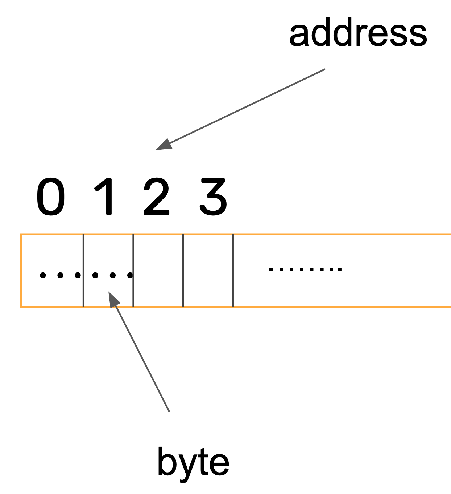
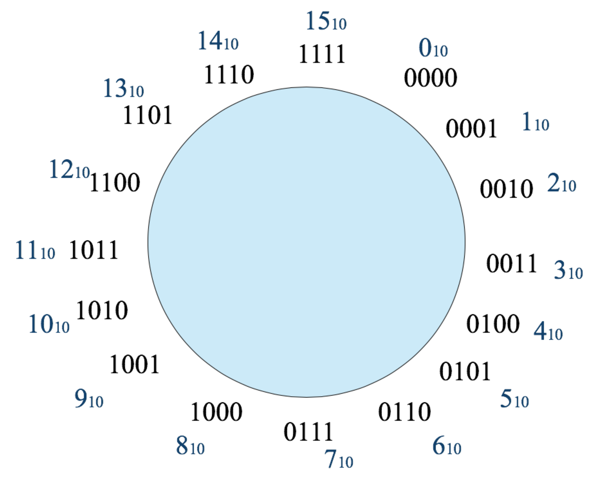
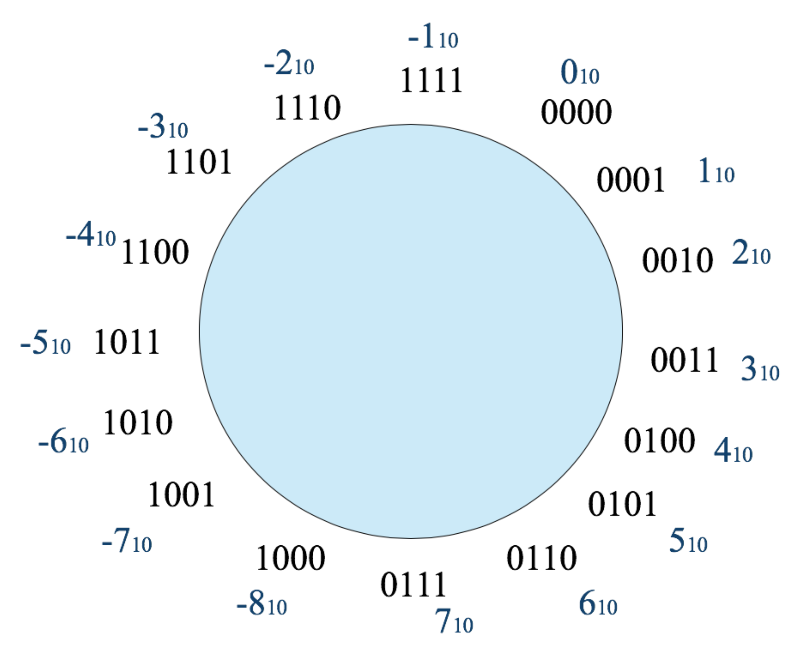
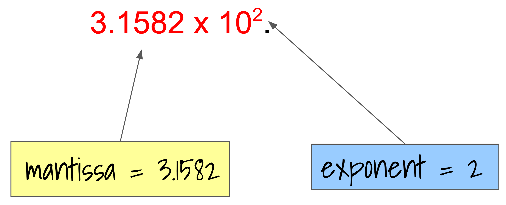
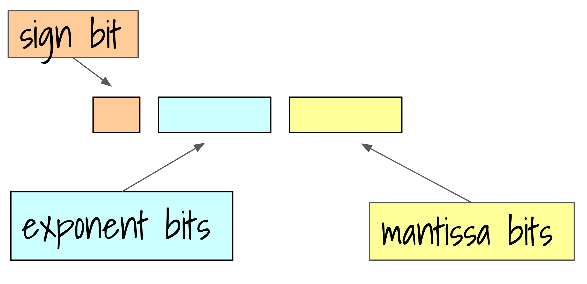

1.2 Integers and Real Numbers¶
We can represent everything in the computer using patterns of binary digits.
Integers, fractions, characters, images, sound, video….
It all depends on how we interpret the sequence of bits. A sequence might be interpreted as an integer, or we might interpret it to mean a certain character (eg a capital A), or it might represent a pixel in an image.
Before we get to an explanation of techniques for representing numbers in a binary sequence, I’d like to discuss the way we organise the bits in the memory of a computer.
Memory¶
Computer memory is made up of switches (actually transistors - an electronic switch) that represent the ones and zeros of binary numbers.
Instead of being a very long sequence of these switches, the memory is divided into equal size chunks. Modern computers use chunks of eight of these switches and each chunk is called a BYTE.
Note
The Burroughs B1000 series computers from the 1970’s did not have a fixed chunk size. Instead of 8 bit bytes, the programmers could choose any size they wanted.
You can think of computer memory as a sequence of these 8-bit bytes. The position of each byte in the sequence is the address of the byte. The computer can easily retrieve an individual byte using the address of the byte.
{kind=link}
Note
In the case of the Burroughs B1000 series, the individual bits were numbered, so the machine was described as bit addressable
Numbers: integers¶
If we use a single 8-bit byte for integers we impose a limit on the range of values that can be represented.
The number of different values we can represent in 8-bits is .
To represent a large range of values we could add more bits. For example, 2 bytes or 16 bits would let us represent many more integers.
Do you think it is possible to represent ALL integers in a computer?
The answer is NO! The reason is that computers have a finite amount of memory, and in mathematics there are an infinite number of integers and they can be infitely large. We have to impose a limit somewhere.
As well as integers we also want to represent negative numbers and fractions. How do we do that in the computer where we only have bits and no minus sign or point?
In the case of negative integers, we have to choose a way of interpreting the existing bits as either a positive or negative number. One way to do this is to reserve one of the bits to mean a sign, eg 0 means positive, 1 means negative. In the past, some computers did this and typically assigned the left most bit (most significant) to be the sign bit. This representation is called “sign and magnitude”.
Modern computers use another method called “two’s complement” representation, and that’s the method we will describe in more detail.
To make it a bit easier, we will assume we have only a 4-bit chunk to represent our integers. If we only represent positive integers we can have 0000 to 1111 or 0-15, 16 different patterns and so 16 different values.
Binary |
Unsigned |
sign and magnitude |
2s complement |
|---|---|---|---|
0000 |
0 |
0 |
0 |
0001 |
1 |
1 |
1 |
0010 |
2 |
2 |
2 |
0011 |
3 |
3 |
3 |
0100 |
4 |
4 |
4 |
0101 |
5 |
5 |
5 |
0110 |
6 |
6 |
6 |
0111 |
7 |
7 |
7 |
1000 |
8 |
-0 |
-8 |
1001 |
9 |
-1 |
-7 |
1010 |
10 |
-2 |
-6 |
1011 |
11 |
-3 |
-5 |
1100 |
12 |
-4 |
-4 |
1101 |
13 |
-5 |
-3 |
1110 |
14 |
-6 |
-2 |
1111 |
15 |
-7 |
-1 |
Another way to think about this is in the form of a number circle:
That circle shows the interpretation of the four bit patterns and unsigned integers.
Here is another circle that shows what happens if we interpret the same patterns as 4 bit “2s complement” numbers:
If we only have 4 bit numbers and we use 2’s complement interpretation, we can get some strange results if we do arithmetic and don’t think about what happens when you exceed the 4 bits.
For example, what happens if you add 5 and 6? Using the 2s complement number circle we start at 5 then go around the circle 6 steps and end up at -5! That’s because 5+6 is 11 which exceeds the capacity of a 4 bit 2s complement representation which can only represent integers from -8 to +7.
Using 4 bit 2s complement representation, what is the value of -4-7?
These examples are trivial because we are using only 4 bits for our numbers. However, the same issues can arise with larger fields. For example, a common method of representing intergers in a computer is to use 4 bytes, or 4 x 8 = 32 bits.
How many positive integers can you represent in 32 bits?
So if we can only represent about 4000 million or 4G positive integers then if we use 2s complement representation we can only represent numbers in the approximate range of minus 2G to plus 2G. We can still overflow 32 bits if we add two large integers!
Representing integers in 4 bytes is called single precision. Some computers allow the use of 8 bytes, or double precisions. What is the range of positive and negative integers that can be represented in 2s complement double precision?
Representing Real Numbers¶
There are many situations where you need to represent fractions, not just whole numbers. For this, the computer needs a way of representing real numbers. We know that our computers are finite and we have a limited number of bits to represent data, so any representation of real numbers will also have to be limited.
With real numbers we have to represent the fractional part as well as the whole number. This means we’ll have a limited precision as well as range.
Just as there are many ways to represent integers, there are also many ways to represent the parts of a real number. A common way is “fixed point” representation where we take our field of bits and divide it into fixed sized parts to represent the whole number and the fraction.
For example, we might have one byte for the whole number and one byte for the fraction and so get a number like:
00101010.10000100
The part to the left of the binary point is interpreted as a normal positive number. To the right of the point we using negative powers of two for each position, so in the case the value is
2^-1 x 1 + 2^-6 x 1 or 1/2 + 1/64 or 33/64 or 0.51562
The total value is 42.51562.
Fixed point representation suffers from the finite-ness problem already mentioned, but also has another problem. It’s not very efficient at representing real numbers. For example a number like:
00101010.10000000
This number is “wasting” a lot of zeros on the end. If we needed more digits in the whole number part to represent a big number we have a problem. We can’t re-use the unneccesary zeros on the end.
The solution was another, ingenious, method to represent real numbers. We allow the binary point to “float” to a position that makes optimal use of the available bits. It does this by storing the number in these two parts: exponent and magnitude. When we write large real numbers in decimal we often use a method called “scientific notation”. This is exactly the same idea.
For example, the decimal number 315.82 could be expressed as:
In binary we call this representation “floating point” and the magnitude is called the “mantissa”. We also arrange the bit pattern a little differently and include an explicit sign bit:
To make the representation even more efficient, we have to allow for very small numbers, less than one. In order to avoid wasting bits in the mantissa we need to represent a negative exponent. We could do this using 2s complement representation that we have already covered, but in the most popular standard for floating point numbers (IEEE-754) they use yet another method - “biased” representation where a fixed value is added to the number and the result stored as an unsigned 8 bit number.
The last feature of floating point number representation I want to mention is that the numbers are “normalised”. The mantissa is shifted left or right until there is a single 1 to the left of the binary point, and the exponent is adjusted accordingly.
The widely used IEEE-754 floating number representation standard has three sizes:
Size |
|
|---|---|
single precision |
32 bits |
double precision |
64 bits |
extended precision |
80 bits |
The reasons behind the floating representation are related to efficient use of the computer hardware, the logic. For example, if all floating point numbers are normalised, then all numbers have a 1 to the left of the binary point, and so we don’t need to store it, so we save a bit. Similarly, the exponent is stored in biased representation because it makes it easier to do arithmetic.
On the subject of computer arithmetic: there are a lot of traps that programmers can fall in to when using real numbers as represented in floating point. Many numbers can not be represented exactly, for example take the decimal number 0.1 and try and represent it in binary fixed point with 16 bits for the fractional part. You can see that you can’t represent it accurately. This compounded if you now do arithmetic on the (innacurate) representation. So you might multiply your number by 10 and then test the result to see if it equals 1 (0.1 x 10). You might be surprised by the result.
The subject of floating point number representation and floating point arithmetic could occupy several University level courses! So that’s all I’ll say about them here.
There are many other ways to represent numbers as binary patterns. The Python language represents integers in a form that allows arbitrary length numbers and arithmetic on them. Try a simple loop to calculate factorial 100. The result is a very long integer.
Real numbers can also be represented by “rational” numbers - pairs of integers. There are software libraries that implement rational number representation but I don’t know of any current computer hardware that does this.
That completes our introduction to representing numbers as binary values in a computer.